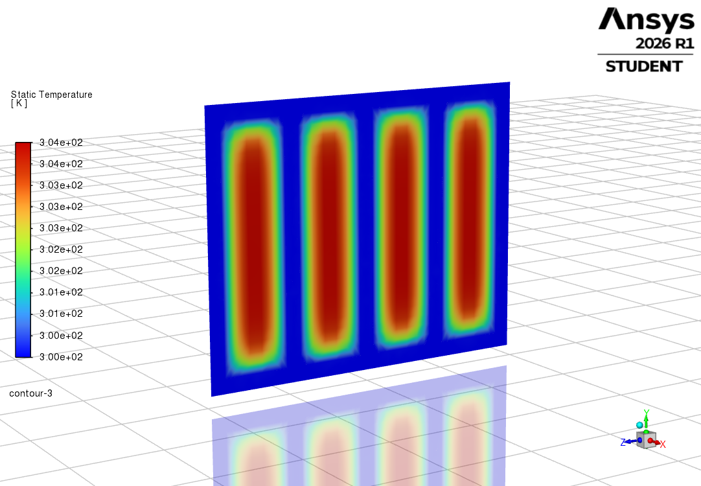
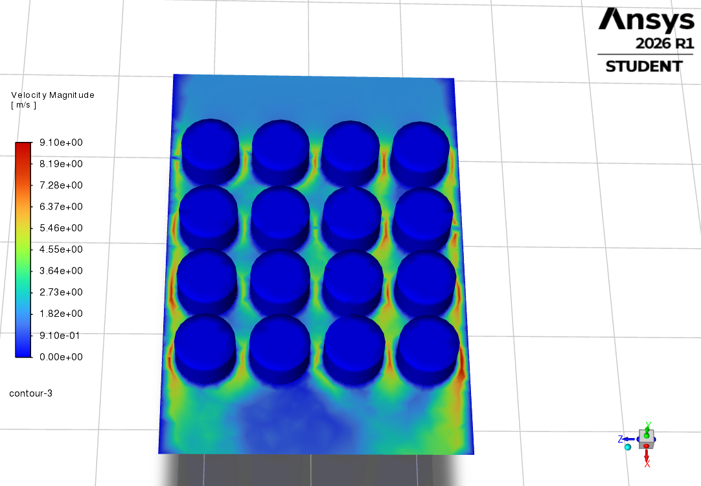

Heat Generation
Battery cells generate heat during operation. The resulting thermal field affects the temperature distribution within the module.
A computational framework combining Computational Fluid Dynamics and Machine Learning to investigate thermal behaviour and predictive cooling strategies for lithium-ion battery modules.
Lithium-ion batteries generate heat during charging and discharging. Controlling this heat is important for maintaining battery safety, performance and service life.
This project focuses on developing a computational Battery Thermal Management System (BTMS) framework using Computational Fluid Dynamics and Machine Learning.
CFD simulations are used to investigate the thermal and flow behaviour of the battery module under different operating conditions. The resulting simulation data can then be used as a basis for predictive modelling.
Battery cells generate heat during operation. The resulting thermal field affects the temperature distribution within the module.
CFD is used to examine temperature distribution and identify regions where thermal non-uniformity may occur.
Coolant velocity distribution is analysed to understand how the cooling medium interacts with the battery module.
Simulation data can be used to develop predictive models for estimating cooling requirements under different conditions.
Develop CFD models for lithium-ion battery modules.
Analyse temperature distribution inside battery packs.
Generate simulation datasets under different operating conditions.
Develop Machine Learning models for predicting optimum coolant flow rates.
Improve battery safety, thermal uniformity and cooling energy efficiency.
Build the computational representation of the lithium-ion battery module and cooling domain.
Evaluate thermal and coolant-flow behaviour using ANSYS Fluent.
Collect temperature and flow-related simulation data for different operating conditions.
Use the generated simulation data as the basis for predictive Machine Learning models.
CFD simulations were performed to investigate thermal and flow characteristics of the battery module. The temperature and coolant velocity distributions are used to assess the cooling behaviour of the system.

Cross-sectional temperature distribution across the battery module.

Flow-field distribution of the coolant within the battery module.
High-fidelity CFD simulations provide detailed information about the thermal response of the battery module.
The proposed framework uses simulation datasets to investigate Machine Learning models capable of predicting cooling requirements for different battery operating conditions.
The long-term objective is to reduce the dependence on repeated computationally expensive simulations when evaluating different operating conditions.
Computational Fluid Dynamics and thermal flow analysis.
Data processing, analysis and computational workflows.
Predictive modelling using simulation datasets.
Thermal and coolant-flow analysis of battery modules.
Processing and visualization of simulation results.
Interpretation of thermal and velocity distributions.
Improve understanding of battery thermal behaviour and cooling performance.
Investigate strategies for maintaining more uniform battery temperatures.
Develop predictive approaches for estimating coolant flow requirements.
Explore the potential for ML models to reduce repeated CFD computational effort.
The project is currently being developed as an ongoing research project. The CFD simulations and predictive modelling framework are part of the continuing investigation.
This project brings together CFD-based thermal analysis and Machine Learning to investigate how computational simulation can support predictive thermal management of EV battery systems.